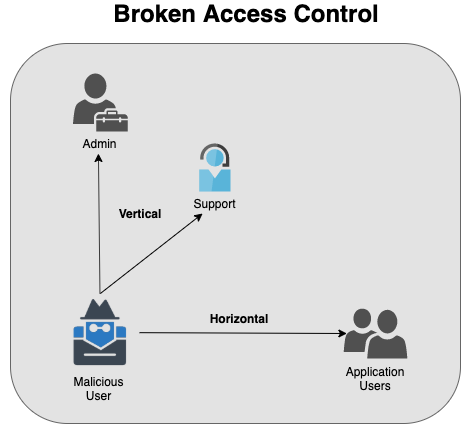
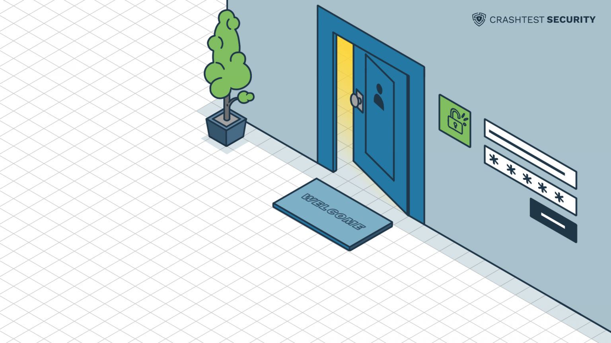
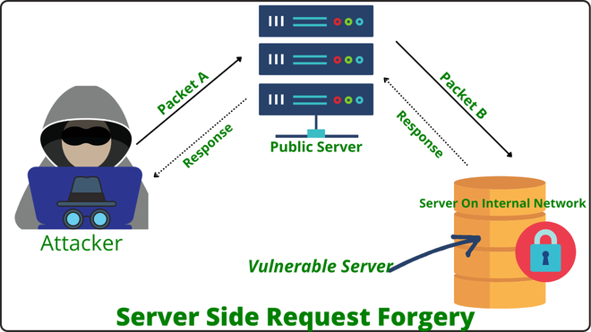

Open Web Application Security Project (OWASP)
- The OWASP Top 10 is one of the most popular projects: a list of the top 10 threats that modern web applications must protect against.
- The goal of the Top 10 is it is meant to encourage organizations to change their software development cultures, so that they produce more secure code.
Changes in 10 main OWASP categories (Source: OWASP)

A01:2021 Broken Access Control
Access control vulnerabilities occur when users can act outside of their intended permissions. This typically leads to unauthorized access, information disclosure, and modification or destruction of data. These vulnerabilities arise from insecure coding or insecure implementation of authentication and authorization mechanisms.
Two common names for splitting access control vulnerabilities
- Horizontal Privilege Escalation: a user can perform an action or access data of another user with the same level of permissions.
- Vertical Privilege Escalation: a user can perform an action or access data that requires a level of access beyond their role
Example:
Horizontal Permission Issues: an attacker logs into a banking application using their own account details. When the attacker views their account, the browser makes a request to the web server for the account numbers balance and recent transactions.
https://mybankingapp.test/cgi-bin/hpe.py?accountId=4462
https://mybankingapp.test/cgi-bin/hpe.py?accountId=4463
{“AccountID”: 4463, “Balance”: “$167,183.09”}
Facebook Business Pages (Aug 2015)
A02:2021 Cryptographic Failures
Cryptographic failures appear when sensitive data is insufficiently protected and exposed to unauthorized audiences. Such failures are most common if data is transmitted or stored in clear text or using known-to-be-weak cryptographic algorithms.
- Possible attacks
- HTML5 Web Storage
- Header attack
- Transport layer
- Encryption
Insecure default configurations

SSLv2 (Netscape Encryption Protocol) has long considered to be broken, and none of the clients today use it for secure connections. But researchers have found that out of 36 million HTTPS servers they probed, 6 million (about 17%) still supported SSLv2.
- Measures to prevent
- Using Transport Layer Security (TLS) when sending and receiving data from your users and the systems you operate.
- Classify data processed, stored, or transmitted by an application, to understand what data you need to defend, and identify appropriate controls
- Make sure to encrypt all data classified as "sensitive"
A03:2021 Injection
An attacker can gain access to sensitive data by injecting malicious data as part of a command or query. This usually happens when a website fails to filter, validate or sanitize users` inputs or implement parameterization.
- Possible attacks
- HTML
- SQL
- PHP
- XML
- and other
SQL injection
Subverting application logic
Еhe application requires data, executes the following SQL query:
SELECT * FROM users WHERE username = 'wiener'
AND password = 'bluecheese'
The key thing here is that the double-dash sequence -- is a comment indicator in SQL, and means that the rest of the query is interpreted as a comment. This effectively removes the remainder of the query, so it no longer includes AND password = ''
This query returns the user whose username is administrator and successfully logs the attacker in as that user.
A04:2021 Insecure Design
Insecure design is a new entry on the OWASP Top 10 in 2021. It is different from insecure implementation in that it has more to do with risks related to design and architectural flaws. A secure implementation might have an insecure design which still renders a web application vulnerable to attacks
- Some remediation can help to protect the insecure design vulnerability such as:
- Follow OWASP top 10 approach while designing or implementing a new application. Secure design development lifecycle with the help of security professionals help to save from insecure design vulnerability.
- Implementing the Security in the SDLC will help so we usually considers all the factors from threat modeling to vulnerability assessment in SDLC.
A05:2021 Security Misconfiguration

This category covers a brand range of potential vulnerabilities including insecure default configurations, incomplete configurations, and misconfigured HTTP headers, using insecure default usernames and passwords, etc.
SECURITY MISCONFIGURATION EXAMPLES:
- The app server admin console is automatically installed and not removed
Risk:
Attacker discovers the standard admin pages are on your server, logs in with default passwords, and takes over. - Directory listing is not disabled on your server
Risk:
Attacker discovers they can simply list directories to find any file. Attacker finds and downloads all your compiled Java classes, which they decompile and reverse engineer to get all your custom code. They then find a serious access control flaw in your application. - App server comes with sample applications that are not removed from your production server
Risk:
These sample applications have well-known security flaws attackers can use to compromise your server.
A06:2021 Vulnerable and Outdated Components
This refers to known issues where vulnerabilities exist because the developers either don't know the versions of the components being used, including the versions of nested dependencies, or they don't know that the software being used is no longer supported or out of date.
- In this case, an attacker tries to make a request to a website, and that request loads a page that contains the vulnerability.
- The website responds to the request which also discloses the vulnerable components.
- Once the attacker finds the vulnerable components and version, then he will go to Internet and searches for known vulnerabilities.
- It is easy to find risks associated with vulnerable components on the Internet, so attackers get information about how this risk can be exploited.
- Then attacker so goes and launches the attack with the website.
Examples of Using Components with Known Vulnerabilities in the world
Slack's career page was using an outdated Greenhouse JavaScript dependency which resulted in an HTTP parameter pollution vulnerability. This would have allowed the loading of external Greenhouse forms (not owned by Slack). We updated the Javascript and the issue is resolved.
A07:2021 Identification and Authentication Failures
This happens thanks to reused passwords or weak credentials, such as missing multi-factor authentication methods or sticking with default settings.
How does a password get hacked?
1. Force attack:
This attack tries to guess every combination in the book until it hits on yours. The attacker automates software to try as many combinations as possible in as quick a time as possible. In 2012, an industrious hacker unveiled a 25-GPU cluster he had programmed to crack any 8-character Windows password containing uppercase and lowercase letters, numbers, and symbols in less than six hours. It has the ability to try 350 billion guesses per second. Generally, anything under 12 characters is vulnerable to being cracked. We learn from brute force attacks that password length is very important. The longer, the better.
2. Dictionary attack:
The hacker is essentially attacking you with a dictionary. Whereas a brute force attack tries every combination of symbols, numbers, and letters, a dictionary attack tries a prearranged list of words such as you`d find in a dictionary. If your password is indeed a regular word, you`ll only survive a dictionary attack if your word is wildy uncommon or if you use multiple word phrases, like LaundryZebraTowelBlue. These multiple word phrase passwords outsmart a dictionary attack.
3. Phishing:
That most loathsome of tactics — phishing — is when cybercriminals try to trick, intimidate, or pressure you through social engineering doing what they want. A phishing email may tell you (falsely) that there’s something wrong with your credit card account. It will direct you to click a link, which takes you to a phony website built to resemble your credit card company. The scammers stand by with bated breath, hoping the ruse is working and that you’ll now enter your password. Once you do, they have it.
A08:2021 Software and Data Integrity Failures
This is the second new category in the Top 10 in 2021, and is related with the failure to verify the integrity of software updates and patches befor implementation on live applications and servers.
The most high-profile example of this would be the SolarWinds cyber attack in 2020.
SolarWinds, based in Texas, United States of America, provides a platform called “Onion” which helps companies, many of which are Fortune 500 companies and include government agencies such as the Pentagon, to manage their IT resources. Hackers managed to hack into the “Onion” and added malicious code which was undetected. As a result, SolarWinds unwittingly sent out updates and patches with the malicious code to its customer base. These compromised updates/patches then created backdoors which the attackers then used to install more malware to spy on the affected companies and government agencies.
A09:2021 Security Logging and Monitoring Failures
Logging and Monitoring these are important components to ensure that any suspicious activity can be detected in real time or diagnosed after the fact.
Security logging is recording information about what happens within your network. Each type of log provides different kinds of information. For example, a firewall log may record the source IP address of each packet sent or received by the device. Event logs record the date, time, and details of each event that occurs within the computer. Application logs record the name of the process that was running when the event occurred.
Examples of Insufficient Logging and Monitoring Attacks
The Stuxnet Worm Attack on Iran’s Nuclear Program
The Stuxnet worm is a masterfully crafted Malware that attacks Supervisory Control and Data Acquisition (SCADA) systems. In 2010, the security team at the Iranian nuclear program discovered that the bug had been used to access critical weapons control systems. On deeper analysis, the bug was found to be active since 2005 and was spread using infected USB drives. The hackers took advantage of poor logging and monitoring mechanisms to gain elevated access discreetly.
A10:2021 Server-Side Request Forgery (SSRF)
SSRF stands for the Server Side Request Forgery. SSRF is a server site attack which leads to sensitive information disclosure from the back end server of application. In server site request forgery attacker send malicious packets to any Internet-facing webserver and this webserver sends packet to back end server running on the internal network on behalf of attacker. This vulnerability mostly found in the application those have facility to feed the URL for fetching data from the respective servers , also present in the application in which two or more servers from different hosts communicate with each other for information sharing.
Let’s explore the concept with help of example :
Attacker sends Crafted Packet A to the publicly available server, and to full-fill the users query public server sends request to the back end server with Packet B , as this request coming from the public server back end server would trust that Packet B coming from the internal network and accept he packet and send response.This is possible because the attacker make request on behalf of other servers.
Types Of SSRF :
1. Blind SSRF:
In a Blind SSRF, attacker are not able to control the data of packet B that are sent to the application in a trusted internal network. Here attacker can control the IP address and ports of server. To exploit this type of SSRF we have to feed URL followed by the colon and port number, by observing responses and error messages from the server we can find the open and close ports of server.
http://example.com:1337
http://example.com:9923
http://example.com:43
http://example.com:22
2. Limited Response / Partial SSRF :
In this type of SSRF we get limited response from the server like title of the page or got access to resources but can’t see the data. We can control only certain parts of packet B that arrive internal application this type of vulnerability can be used to read local system files such as /etc/config, /etc/hosts, etc/passwd and many others. By using file:// protocol we can read file on the system.In some cases XXE injection ,DDos these type of vulnerability may useful be exploit Partial SSRF Vulnerability.
file:///etc/hosts
file:///etc/config
file:///etc/passwd
3. Full Response SSRF : In Full SSRF we have complete control over the Packet B (shown in fig). Now we can access the services running of the internal network and find the vulnerabilities in internal network. In this type of SSRF we can use the protocols like file://, dict://, http://, gopher://, etc. here we have large scope of creating different request and exploit the internal network if any vulnerabilities are present. Full SSRF vulnerability may cause the application crash through buffer overflow, by sending large string in the request causes the buffer overflow.
http://192.168.1.8/BBBBBBBBBBBBBBBBBBBBBBBBBBBBBBBBBBBBBBBBBBBBBBBBBBBBBBBBBBBBBBBBBBBBBBBBBBBBBBB

KISS principle says:
avoid to complex solutions and over-optimizations. The code should be easily understandable by other devs and yourself.
- Real life examples:
- overloading the interface with options that most users don't need.
- connecting a huge library, but you need a couple of functions from it.
Conclusions
- no need to implement additional functionality
- no need to overload the interface with unnecessary options
- has no reason to implement complex business logic
- do not lay down the functions of reserve
In programming, as in many areas of life, you need to be able to stop in time